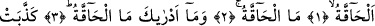
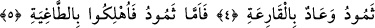
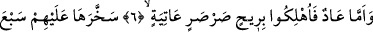
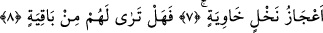

NEDİR O HÂKKA?
NEDİR O GERÇEKLEŞECEK OLAN?
Bismillâhirrahmânirrahîm
1. el-Hâkka, gerçekleşecek olan;
2. Nedir o Hâkka? (Evet) nedir o gerçekleşecek olan?
3. Gerçekleşecek olanın (kıyâmetin) ne olduğunu sen nereden bileceksin?
4. Semûd ve Âd kavimleri, kapılarını çalacak felâketi (kıyâmeti) yalan
saymışlardı.
5. Semûd’a gelince: Onlar pek zorlu (bir sarsıntı) ile helâk edildiler.
6. Âd kavmi ise, uğultulu, kasıp kavuran bir fırtına ile mahvedildiler.
7. Allah onu, ardarda yedi gece, sekiz gün onların üzerine musallat etti. Öyle ki
(eğer orada olsaydın), o kavmi, içi boş hurma kütükleri gibi oracıkta yere serilmiş
hâlde görürdün.
8. Şimdi onlardan arda kalan bir şey görüyor musun?
“el-Hâkka” Bu kelime, kıyâmetin isimlerinden birisidir. Söz konusu kelime “hakka-
yehıkku”dan türemiştir. Bu fiilin anlamı; “vâcip ve sâbit” oldu demektir. Kıyâmete
“hâkka” denmesi, onun gelmesinin vâcip olmasından ve vukû bulmasının sâbit
olmasından dolayıdır. Bununla alâkalı olarak diğer bir âyet-i kerîmede, “Kıyâmet vakti
de gelecektir; bunda şüphe yoktur” (el-Hac, 22/7) Bu âyette “kıyâmetin gelmesi”
şeklindeki cümlede “gelme” fiilinin kıyâmete isnâd edilmesi, hakîkî bir isnaddır.
Râğıb İsfahânî Müfredat’ta, kıyâmete neden “el-Hâkka” dendiğini açıklarken,
kıyâmet gününün, yapılan amellere karşılıklarının verileceği gün olmasını dikkatlere
sunmaktadır. Râğıb’ın bu açıklamasına göre kıyâmete “hâkka” denmesi, hakîki isnâd
değil, mecâzî isnâd olur. Tıpkı “filancanın günü oruçludur” dendiğinde, mecâzen o
kimsenin gününü oruçla geçirdiğini ifâde etmek gibi.